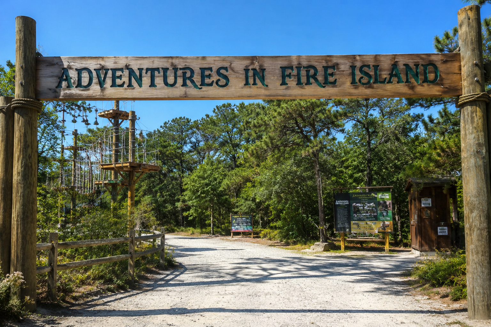

I recently visited Adventures in Fire Island, an exciting outdoor adventure park surrounded by beautiful trees and nature. As I entered through the large wooden entrance, I was greeted by a peaceful atmosphere and a variety of adventure activities. One of the highlights of my visit was exploring the ropes courses and obstacle challenges, which tested my balance, strength, and confidence. The park was well-maintained, and the staff were friendly and helpful throughout the day. The natural scenery made the experience even more enjoyable, providing a perfect mix of adventure and relaxation. I spent time walking along the trails, enjoying the fresh air, and taking in the beautiful surroundings. Overall, my trip to Adventures in Fire Island was fun, memorable, and filled with exciting experiences that I would highly recommend to anyone who enjoys outdoor adventures.


Looking for the perfect outdoor getaway? Adventures in Fire Island offers an unforgettable experience for visitors of all ages. From exciting ropes courses and thrilling zip lines to scenic nature trails and relaxing picnic areas, there's something for everyone to enjoy. Whether you're seeking an adrenaline-filled challenge, a fun family day out, or a chance to connect with nature, this park delivers it all in a beautiful and welcoming environment. Create lasting memories, challenge yourself, and discover the excitement that awaits around every corner. Visit Adventures in Fire Island today and turn an ordinary day into an extraordinary adventure! 🌲✨🏕️🚀